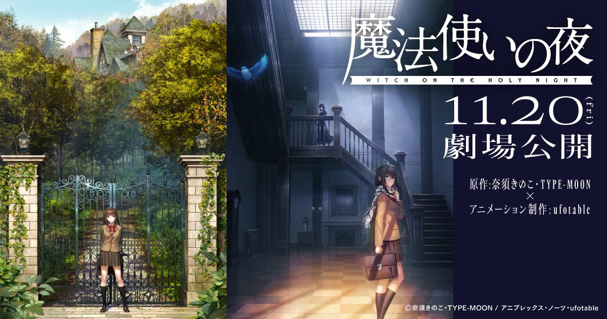

2026-11-03 · 剧场版深读

上映前十七天，剧场版《魔法使之夜》把最后几张牌一次摊完： IMAX 版同步放映、9 月底公开的 90 秒最终预告、supercell 新曲《夜と青》、11 月 25 日主题曲 CD 上架， 以及 2027 年 1 月起在欧美乃至全球多国铺开的上映计划。日本这边是 11 月 20 日、347 馆、东宝与 Aniplex 联合发行。 原作是 TYPE-MOON 2012 年 4 月 12 日发售的 PC 视觉小说，源头却是奈须蘑菇在《月姬》之前写下、当年并未发表的 1996 年小说， 故事落在 1980 年代后半的三咲町——那是整个「月世界」时间线上最早的一格。 2021 年 12 月宣布动画化，到今天，又是五年。
我们昨天那篇《孤独摇滚！》剧场版里刚聊过一次「顺序被反着来」， 《魔法使之夜》是同一个问题的更极端版本。
世界观顺序：1996 年写下《魔法使之夜》→ 2000 年《月姬》→ 2004 年《Fate/stay night》→ 后来的《空之境界》《魔法使之夜》游戏（2012）…… 动画化顺序：《空之境界》剧场版 2007 年就上了，《Fate》系列被翻拍了一遍又一遍，《月姬》到 2021 年才拿到片头动画， 而这块地基，直到 2026 年 11 月 20 日才第一次被搬上银幕。
换句话说：型月是先让观众熟悉了结果，再请他们回去看起因。 苍崎青子在《月姬》《Fate》的语境里，是「苍崎橙子的妹妹」「第五法的持有者」——一个已经完成的人。 而《魔法使之夜》讲的是她还没成为魔法使、连自己的魔力都控制不住的那段日子。
| 作品 | 世界内时间 | 首次影像化 | 观众认识它的路径 |
|---|---|---|---|
| 魔法使之夜 | 1980 年代后半（最早） | 2026/11/20（最晚） | 先在其他作品里听过名字 |
| 月姬 | 1990 年代末 | 2000 年代 TV 版 / 2021 片头 | 同人时代即爆红 |
| Fate/stay night | 2000 年代 | 2006 起多次动画化 | 大多数人的型月入口 |
| 空之境界 | 1990 年代 | 2007 起七部剧场版 | ufotable 与型月的第一次长跑 |
前传最难的地方从来不是「交代起源」，而是在一部观众已知结局的作品里，重新制造不确定。 你明知道青子会活下来、会成为魔法使、会成为别人口中的那个名字，那么这部电影必须让你在前两个小时里真的忘掉这件事。 这是《魔法使之夜》比一般改编多出来的一道题。
《魔法使之夜》在 TYPE-MOON 的作品表里是个异类： 没有分支选项，没有攻略线，没有好感度，一条线走到底；全语音，靠文字演出、构图、音乐和停顿把氛围一点点堆起来。 当年它被称作「正统派视觉小说」，说白了就是——它更像一本能读的小说，而不是一个能玩的游戏。
这个形状有两面。 好的一面：它天生是电影的形状。时长固定、节奏由作者单方面控制、不需要把多条路线压进一部片子里， 不像《Fate/stay night》那样每次改编都要先回答「这次拍哪条线」。 坏的一面：它最有力的部分恰恰是「静下来才成立」的段落——一个停顿、一句没说完的话、洋馆里没人开口的那几秒。 把这些留白填满，就是改编失败。
于是「谁来做」成了比「做不做」更重要的问题。班底是这样的：ufotable 制作，竹内將执导，近藤光任总监督， 都築萌做角色设计，小山广和的原作角色设计、武内崇的角色原案都在，音乐深泽秀行，脚本由 ufotable 负责、奈须蘑菇参与； 配音沿袭 2012 年游戏原班——户松遥、花泽香菜、小林裕介，十四年没换人。
竹内將这个名字值得单独看一眼。他做过《月姬 -A piece of blue glass moon-》的动画导演、《空之境界 未来福音》的原画， 也参与过《Fate/stay night [Unlimited Blade Works]》与《鬼灭之刃》的演出。 选一个在「型月静默派」那条线上待过的人，而不是选一个把光效拉满的人，本身就是一次有意识的避让。 飞碟社靠《鬼灭》和《Heaven's Feel》建立起来的视觉语法是高速剑戟加粒子光；把那套语法原封不动搬进一部靠沉默发力的作品，才是真正的错配风险。
主题曲信息才是这次宣发里真正狠的一刀。
《夜と青》由 ryo 作词作曲编曲、yanaginagi 演唱，挂的名字是 supercell。 而 2012 年那部原作游戏的片尾曲《星が瞬くこんな夜に》，同样是 ryo 写、同样是 yanaginagi 唱。 中间隔了十六年。ryo 在公开信里说得很直白：「如果没有这次邀约，我想 supercell 大概还睡着。」 supercell 上一首单曲停在 2019 年的《#Love》，《夜と青》是七年来第一首新歌， 据他说到 2026 年 7 月底才定稿，歌词、吉他音量、hi-hat 一直改到截止前。
注意这里换掉的不只是歌名。
| 2012 游戏 ED | 2026 剧场版主题曲 | |
|---|---|---|
| 曲名 | 星が瞬くこんな夜に | 夜と青 |
| 创作者 | ryo × yanaginagi | ryo × yanaginagi（同一对） |
| 在叙事里的位置 | 结束之后的余韵 | 进入之前的宣言 |
| 对观众说的话 | 故事讲完了，慢慢散场 | 故事重新开始了 |
把「余韵」升级成「宣言」，是一次立场声明：这不是补完，是重启。 更妙的是被唤醒的对象——2012 年戴着耳机听那首 ED 的人，现在多半已经不在学生宿舍里了。 官方没有去拉一批新观众，它先精准地把十几年前那批人叫了回来。 一个休眠七年的乐队、一位离开 supercell 十五年的歌手、一部三十年前没发表的小说，三样东西被同一通电话叫醒。 说这是情怀营销太轻了；它承认了这部电影的第一读者是谁。
再看发行规格：日本 347 馆、IMAX 同步、东宝与 Aniplex 联合，2027 年 1 月起 45 个以上国家和地区， 北美由 Crunchyroll 与 Sony Pictures 在 1 月 29 日上映，日语字幕版之外还配了英语配音版。
这个规模对一部「没有圣杯、没有从者、没有大反派」的型月原点作来说，其实有点超标。 它凭什么？答案大概率不在型月粉丝的体量，而在ufotable 这两年攒下来的发行信用—— 同期的《鬼灭之刃 无限城篇》第一章在 2025 年把海外院线通道整个铺开了一遍，全球票房早已是数亿美元量级。 飞碟社现在能把一部节奏内敛、主打氛围的文艺向剧场版送进 45 国，靠的是那条被《鬼灭》跑熟的管道。 换句话说：最老的那块地基，是被最卖座的那条产线抬出去的。
这也带出一个门槛问题。 抱着《鬼灭》或《Fate》那种高密度战斗预期进场的人，多半会觉得它平—— 它没有要拯救的世界，冲突全从很近的地方长出来：外来魔术师、魔术界的戒律、家族的继承宿命，以及三个人在同一栋洋馆里怎么相处。 魔术界的规矩是，看见魔术的普通人要么被消除记忆、要么被抹杀；青子与有珠偏偏破例收留了从深山转学来的草十郎。 整部片子的张力，就压在这条「本该被抹掉的人留下来了」的例外上。
所以它的入场券反常识地低：不用补《Fate》，不用补《月姬》，直接看就行。 你只需要接受一个前提——在这个世界里魔法确实存在，但它大多数时候藏在普通的日常底下。
最终预告里最该盯的不是特效，是日常镜头与战斗镜头的比例。 90 秒里大量新镜头被塞进了「学生会长日常」「洋馆修习」「三人相处」这一侧，战斗只是被快剪带过。 从已放出的描述看，飞碟社这次是收着来的，没有往炸裂方向使力。 这是个好信号，但也只是预告——预告片收得住，不代表正片收得住。
把 supercell 请回来，不是给老粉发糖，是给这部电影定调： 它首先是一次「回到 2012 年」，其次才是一次「进入 2026 年的电影院」。 这个排序很诚实，也有代价——它等于先把新观众放在了第二顺位。 我们倾向于认为这是对的：《魔法使之夜》从来不是靠信息量取胜的作品，硬把它包装成一部「型月世界观入门大片」， 反而会把它最值钱的那份安静弄丢。
同样是「把前传交给电影」，可以对照两种做法： 一种像《Fate/Zero》，用全新阵容把过去拍成一部独立的群像剧，观众看不懂也不影响； 另一种就是《魔法使之夜》，它要求你先忘掉你知道的青子，才能重新认识这个还没长大的青子。 前一种是在过去里加东西，后一种是在过去里减东西——后者难得多。 再对照 ufotable 自己的两条产线：《鬼灭》做的是「把每一帧都填满」，《空之境界》做的是「敢让画面空着」。 这次显然要调用的是后者那套肌肉。
11 月 20 日之后，我们准备做三项可核对的记录： ① 零基础入场测试——找一位没看过任何型月作品的观众直接进场，看前 30 分钟三人关系能不能立住、需不需要补设定； ② 静默占比——数无配乐、无台词的镜头时长，若低于全片四分之一，说明 ufotable 最终还是没忍住把留白填了； ③ 主题曲的位置——《夜と青》如果落在片头，那「重启」就是真的；如果落在片尾， 那它其实还是一首 ED，宣传上那句「重新开始」就得打个折扣。
1996 年写下、2012 年才做成游戏、2021 年宣布动画化、2026 年终于上映—— 型月把最老的一块地基，留到了最后才动。 顺序反了三十年，好处是它现在已经不必向任何人解释「魔法是什么」；坏处是它得让已经知道答案的人，重新愿意不知道。
至于要不要补设定、要不要怕看不懂，答案都是否定的。 它讲的是一段很安静的起点，一个少女成为独当一面的魔法使之前的日子。 影院灯暗下来的时候，你只要接受一件事就够了：坡道上的那栋洋馆里住着两个魔女，而一个本该被抹掉的少年，被允许留了下来。 剩下的，让他们慢慢说。